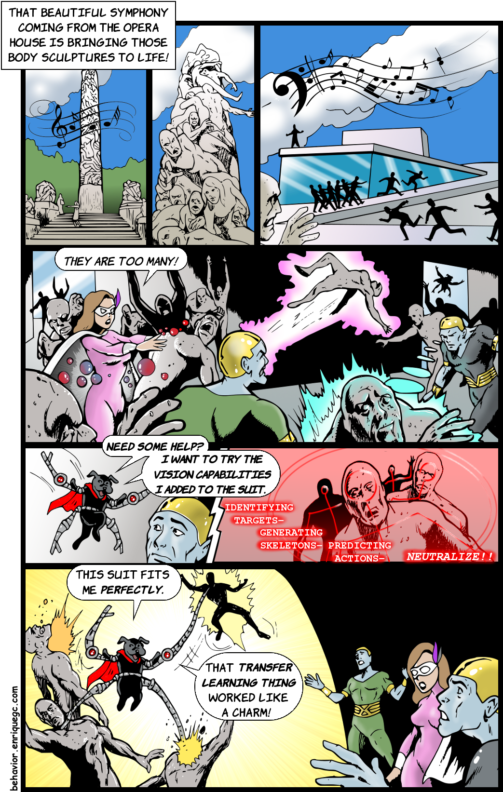

Chapter 9 Multi-user Validation
Every person is different. We all have different physical and mental characteristics. Every person reacts differently to the same stimulus and conducts physical and motor activities in particular ways. As we have seen, predictive models rely on the training data; and for user-oriented applications, this data encodes their behaviors. When building predictive models, we want them to be general and to perform accurately on new unseen instances. Sometimes this generalization capability comes at a price, especially in multi-user settings. A multi-user setting is one in which the results depend heavily on the target user, that is, the user on which the predictions are made. Take, for example, a hand gesture recognition system. At inference time, a specific person (the target user) performs a gesture and the system should recognize it. The input data comes directly from the user. On the other hand, a non multi-user system does not depend on a particular person. A classifier that labels fruits on images or a regression model that predicts house prices does not depend directly on a particular person.
Some time ago I had to build an activity recognition system based on inertial data from a wrist band. So I collected the data, trained the models, and evaluated them. The performance results were good. However, it turned out that when the system was tested on a new sample group it failed. The reason? The training data was collected from people within a particular age group (young) but the target market of the product was for much older people. Older people tend to walk more slowly, thus, the system was predicting ‘no movement’ when in fact, the person was walking at a very slow pace. This is an extreme example, but even within the same age groups, there can be differences between users (inter-user variance). Even the same user can evolve over time and change her/his behaviors (intra-user variance).
So, how do we evaluate multi-user systems to reduce the unexpected effects once the system is deployed? Most of the time, there’s going to be surprises when testing a system on new users. Nevertheless, in this chapter I will present three types of models that will help you reduce that uncertainty to some extent so you will have a better idea of how the system will behave when tested on more realistic conditions. The models are: mixed models, user-independent models, and user-dependent models. I will present how to train each type of model using a database with actions recorded with a motion capture system. After that, I will also show you how to build adaptive models with the objective of increasing the prediction performance for a particular user.
9.1 Mixed Models
Mixed models are trained and validated as ordinary, without considering information about mappings between data points and users. Suppose we have a dataset as shown in Figure 9.1. The first column is the user id, the second column the label we want to predict and the last two columns are two arbitrary features.
FIGURE 9.1: Example dataset with a binary label and 2 features.
With a mixed model, we would just remove the userid column and perform \(k\)-fold cross-validation or hold-out validation as usual. In fact, this is what we have been doing so far. By doing so, some random data points will end up in the train set and others in the test set regardless of which data point was generated by which user. The user rows are just mixed, thus the mixed model name. This model assumes that the data was generated by a single user. One disadvantage of validating a system using a mixed model is that the performance results could be overestimated. When randomly splitting into train and test sets, some data points for a given user could end up in each of the splits. At inference time, when presenting a test sample belonging to a particular user, it is likely that the training set of the model already included some data from that particular user. Thus, the model already knows a little bit about that user so we can expect an accurate prediction. However, this assumption not always holds true. If the model is to be used on a new user that the model has never seen before, then, it may not produce very accurate predictions.
When should a mixed model be used to validate a system?
- When you know you will have available train data belonging to the intended target users.
- In many cases, a dataset already has missing information about the mapping between rows and users. That is, a userid column is not present. In those cases, the best performance estimation would be through the use of a mixed model.
To demonstrate the differences between the three types of models (mixed, user-independent, and user-dependent) I will use the SKELETON ACTIONS dataset. First, a brief description of the dataset is presented including details about how the features were extracted. Then, the dataset is used to train a mixed model and in the following subsections, it is used to train user-independent and user-dependent models.
9.1.1 Skeleton Action Recognition with Mixed Models
preprocess_skeleton_actions.R classify_skeleton_actions.R
To demonstrate the three different types of models I chose the UTD-MHAD dataset (Chen, Jafari, and Kehtarnavaz 2015) and from now on, I will refer to it as the SKELETON ACTIONS dataset. This database is suitable because it was collected by \(8\) persons (\(4\) females/\(4\) males) and each file has a subject id, thus, we know which actions were collected by which users. There are \(27\) actions including: ‘right-hand wave’, ‘two hand front clap’, ‘basketball shoot’, ‘front boxing’, etc.
The data was recorded using a Kinect camera and an inertial sensor unit. Each subject repeated each of the \(27\) actions \(4\) times. More information about the collection process and pictures is available in the original dataset website https://personal.utdallas.edu/~kehtar/UTD-MHAD.html.
For our examples, I only consider the skeleton data generated by the Kinect camera. These data consists of human body joints (\(20\) joints). Each file contains one action for one user and one repetition. The file names are of the form: aA_sS_tT_skeleton.mat. The A is the action id, the S is the subject id and the T is the trial (repetition) number. For each time frame, the \(3\)D positions of the \(20\) joints are recorded.
The script preprocess_skeleton_actions.R shows how to read the files and plot the actions. The files are stored in Matlab format. The library R.matlab (Bengtsson 2018) can be used to read the files.
# Path to one of the files.
filepath <- "/skeleton_actions/a7_s1_t1_skeleton.mat"
# Read skeleton file.
df <- readMat(filepath)$d.skel
# Print dimensions.
dim(df)
#> [1] 20 3 66From the file name, we see that this corresponds to action \(7\) (basketball shoot), from subject \(1\) and trial \(1\). The readMat() function reads the file contents and stores them as a \(3\)D array in df. If we print the dimensions we see that the first one corresponds to the number of joints, the second one are the positions (x, y, z), and the last dimension is the number of frames, in this case \(66\) frames.
We extract the first time-frame as follows:
# Select the first frame.
frame <- data.frame(df[, , 1])
# Print dimensions.
dim(frame)
#> [1] 20 3Each frame can then be plotted. The plotting code is included in the script. Figure 9.2 shows how the skeleton looks like for six of the time frames. The script also has code to animate the actions.
FIGURE 9.2: Skeleton of basketball shoot action. Six frames sampled from the entire sequence.
We will represent each action (file) as a feature vector. The same script also shows the code to extract the feature vectors from each action. To extract the features, a reference point in the skeleton is selected, in this case the spine (joint \(3\)). Then, for each time frame, the distance between all joints (excluding the reference point) and the reference point is calculated. Finally, for each distance, the mean, min, and max are computed across all time frames. Since there are \(19\) joints (excluding the spine), we end up with \(19*3=57\) features. Figure 9.3 shows how the final dataset looks like. It only shows the first four features out of the \(57\), the user id and the labels.
FIGURE 9.3: First rows of the skeleton dataset after feature extraction showing the first 4 features. Source: Original data from C. Chen, R. Jafari, and N. Kehtarnavaz, “UTD-MHAD: A Multimodal Dataset for Human Action Recognition Utilizing a Depth Camera and a Wearable Inertial Sensor,” Proceedings of IEEE International Conference on Image Processing, Canada, September 2015.
skeleton_actions/ directory. To generate this file, run the feature extraction code in the script preprocess_skeleton_actions.R.
Once the dataset is in a suitable format, we proceed to train our mixed model. The script containing the full code for training the different types of models is classify_skeleton_actions.R. This script makes use of the dataset.csv file.
First, the auxiliary functions are loaded because we will use the normalize() function to normalize the data. We will use a Random Forest for the classification and the caret package to compute the performance metrics.
source(file.path("..","auxiliary_functions","globals.R"))
source(file.path("..","auxiliary_functions","functions.R"))
library(randomForest)
library(caret)
# Path to the csv file containing the extracted features.
# preprocess_skeleton_actins.R contains
# the code used to extract the features.
filepath <- file.path(datasets_path,
"skeleton_actions",
"dataset.csv")
# Load dataset.
dataset <- read.csv(filepath, stringsAsFactors = T)
# Extract unique labels.
unique.actions <- as.character(unique(dataset$label))
# Print the unique labels.
print(unique.actions)
#> [1] "a1" "a10" "a11" "a12" "a13" "a14" "a15" "a16" "a17"
#> [10] "a18" "a19" "a2" "a20" "a21" "a22" "a23" "a24" "a25"
#> [19] "a26" "a27" "a3" "a4" "a5" "a6" "a7" "a8" "a9" The unique.actions variable stores the name of all actions. We will need it later to define the levels of the factor object. Next, we generate \(10\) folds and define some variables to store the performance metrics including the accuracy, recall, and precision. In each iteration during cross-validation, we will compute and store those performance metrics.
k <- 10 # Number of folds.
set.seed(1234)
folds <- sample(k, nrow(dataset), replace = TRUE)
accuracies <- NULL; recalls <- NULL; precisions <- NULLIn the next code snippet, the actual cross-validation is performed. This is just the usual cross-validation procedure. The normalize() function defined in the auxiliary functions is used to normalize the data by only learning the parameters from the train set and applying them to the test set. Then, the Random Forest is fitted with the train set. One thing to note here is that the userid field is removed: trainset[,-1] since we are not using users’ information in the mixed model. Then, predictions on the test set are obtained and the accuracy, recall, and precision are computed during each iteration.
# Perform k-fold cross-validation.
for(i in 1:k){
trainset <- dataset[which(folds != i,),]
testset <- dataset[which(folds == i,),]
#Normalize.
res <- normalize(trainset, testset)
trainset <- res$train
testset <- res$test
rf <- randomForest(label ~., trainset[,-1])
preds.rf <- as.character(predict(rf,
newdata = testset[,-1]))
groundTruth <- as.character(testset$label)
cm.rf <- confusionMatrix(factor(preds.rf,
levels = unique.actions),
factor(groundTruth,
levels = unique.actions))
accuracies <- c(accuracies, cm.rf$overall["Accuracy"])
metrics <- colMeans(cm.rf$byClass[,c("Recall",
"Specificity",
"Precision",
"F1")],
na.rm = TRUE)
recalls <- c(recalls, metrics["Recall"])
precisions <- c(precisions, metrics["Precision"])
}Finally, the average performance across folds for each of the metrics is printed.
# Print performance metrics.
mean(accuracies)
#> [1] 0.9277258
mean(recalls)
#> [1] 0.9372515
mean(precisions)
#> [1] 0.9208455The results look promising with an average accuracy of \(92.7\%\), a recall of \(93.7\%\), and a precision of \(92.0\%\). One important thing to remember is that the mixed model assumes that the training data contains instances belonging to users in the test set. Thus, the model already knows a little bit about the users in the test set.
Now, imagine that you want to estimate the performance of the model in a situation where a completely new user is shown to the model, that is, the model does not know anything about this user. We can model those situations using a user-independent model which is the topic of the next section.
9.2 User-independent Models
The user-independent model allows us to estimate the performance of a system on new users. That is, the model does not contain any information about the target user. This resembles a scenario when the user wants to use a service out-of-the-box without having to go through a calibration process or having to collect training data. To build a user-independent model we just need to make sure that the training data does not contain any information about the users on the test set. We can achieve this by splitting the dataset into two disjoint groups of users based on their ids. For example, assign \(70\%\) of the users to the train set and the remaining to the test set.
If the dataset is small, we can optimize its usage by performing leave-one-user-out cross validation. That is, if the dataset has \(n\) users, then, \(n\) iterations are performed. In each iteration, one user is selected as the test set and the remaining are used as the train set. Figure 9.4 illustrates an example of leave-one-user-out cross validation for the first \(2\) iterations.
FIGURE 9.4: First 2 iterations of leave-one-user-out cross validation.
By doing this, we guarantee that the model knows anything about the target user. To implement this leave-one-user-out validation method in our skeleton recognition case, let’s first define some initialization variables. These include the unique.users variable which stores the ids of all users in the database. As before, we will compute the accuracy, recall, and precision so we define variables to store those metrics for each user.
# Get a list of unique users.
unique.users <- as.character(unique(dataset$userid))
# Print the unique user ids.
unique.users
#> [1] "s1" "s2" "s3" "s4" "s5" "s6" "s7" "s8"
accuracies <- NULL; recalls <- NULL; precisions <- NULLThen, we iterate through each user, build the corresponding train and test sets, and train the classifiers. Here, we make sure that the test set only includes data points belonging to a single user.
set.seed(1234)
for(user in unique.users){
testset <- dataset[which(dataset$userid == user),]
trainset <- dataset[which(dataset$userid != user),]
# Normalize. Not really needed here since Random Forest
# is not affected by different scales.
res <- normalize(trainset, testset)
trainset <- res$train
testset <- res$test
rf <- randomForest(label ~., trainset[,-1])
preds.rf <- as.character(predict(rf, newdata = testset[,-1]))
groundTruth <- as.character(testset$label)
cm.rf <- confusionMatrix(factor(preds.rf,
levels = unique.actions),
factor(groundTruth,
levels = unique.actions))
accuracies <- c(accuracies, cm.rf$overall["Accuracy"])
metrics <- colMeans(cm.rf$byClass[,c("Recall",
"Specificity",
"Precision",
"F1")],
na.rm = TRUE)
recalls <- c(recalls, metrics["Recall"])
precisions <- c(precisions, metrics["Precision"])
}Now we print the average performance metrics across users.
mean(accuracies)
#> [1] 0.5807805
mean(recalls)
#> [1] 0.5798611
mean(precisions)
#> [1] 0.6539715Those numbers are surprising! In the previous section, our mixed model had an accuracy of \(92.7\%\) and now the user-independent model has an accuracy of only \(58.0\%\)! This is because the latter didn’t know anything about the target user. Since each person is different, the user-independent model was not able to capture the patterns of new users and this had a big impact on the performance.
When should a user-independent model be used to validate a system?
- When you expect the system to be used out-of-the-box by new users and the system does not have any data from those new users.
The main advantage of the user-independent model is that it does not require training data from the target users so they can start using it right away at the expense of lower accuracy.
The opposite case is when a model is trained specifically for the target user. This model is called the user-dependent model and will be presented in the next section.
9.3 User-dependent Models
A user-dependent model is trained with data belonging only to the target user. In general, this type of model performs better compared to the mixed model and user-independent model. This is because the model captures the particularities of a specific user. The way to evaluate user-dependent models is to iterate through each user. For each user, build and test a model only with her/his data. The per-user evaluation can be done using \(k\)-fold cross-validation, for example. For the skeleton database, we only have \(4\) instances per type of action. The number of unique classes (\(27\)) is high compared to the number of instances per action. If we do, for example, \(10\)-fold cross-validation, it is very likely that the train sets will not contain examples for several of the possible actions. To avoid this, we will do leave-one-out cross validation within each user. This means that we need to iterate through each instance. In each iteration, the selected instance is used as the test set and the remaining ones are used for the train set.
unique.users <- as.character(unique(dataset$userid))
accuracies <- NULL; recalls <- NULL; precisions <- NULL
set.seed(1234)
# Iterate through each user.
for(user in unique.users){
print(paste0("Evaluating user ", user))
user.data <- dataset[which(dataset$userid == user), -1]
# Leave-one-out cross validation within each user.
predictions.rf <- NULL; groundTruth <- NULL
for(i in 1:nrow(user.data)){
# Normalize. Not really needed here since Random Forest
# is not affected by different scales.
testset <- user.data[i,]
trainset <- user.data[-i,]
res <- normalize(trainset, testset)
testset <- res$test
trainset <- res$train
rf <- randomForest(label ~., trainset)
preds.rf <- as.character(predict(rf, newdata = testset))
predictions.rf <- c(predictions.rf, preds.rf)
groundTruth <- c(groundTruth, as.character(testset$label))
}
cm.rf <- confusionMatrix(factor(predictions.rf,
levels = unique.actions),
factor(groundTruth,
levels = unique.actions))
accuracies <- c(accuracies, cm.rf$overall["Accuracy"])
metrics <- colMeans(cm.rf$byClass[,c("Recall",
"Specificity",
"Precision",
"F1")],
na.rm = TRUE)
recalls <- c(recalls, metrics["Recall"])
precisions <- c(precisions, metrics["Precision"])
} # end of users iteration.We iterated through each user and performed the leave-one-out-validation for each, independently of the others and stored their results. We now compute the average performance across all users.
# Print average performance across users.
mean(accuracies)
#> [1] 0.943114
mean(recalls)
#> [1] 0.9425154
mean(precisions)
#> [1] 0.9500772This time, the average accuracy was \(94.3\%\) which is higher than the accuracy achieved with the mixed model and the user-independent model. The average recall and precision were also higher compared to the other types of models. The reason is because each model was targeted to a particular user.
When should a user-dependent model be used to validate a system?
- When the model will be trained only using data from the target user.
In general, user-dependent models have the best accuracy. The disadvantage is that they require training data from the target user and for some applications, collecting training data can be very difficult and expensive.
Can we have a system that has the best of both worlds between user-dependent and user-independent models? That is, a model that is as accurate as a user-dependent model but requires small quantities of training data from the target user. The answer is yes, and this is covered in the next section (User-adaptive Models).
9.4 User-adaptive Models
We have already talked about some of the limitations of user-dependent and user-independent models. On one hand, user-dependent models require training data from the target user. In many situations, collecting training data is difficult. On the other hand, user-independent models do not need data from the target user but are less accurate. To overcome those limitations, models that evolve over time as more information is available can be built. One can start with a user-independent model and as more data becomes available from the target user, the model is updated accordingly. In this case, there is no need for a user to wait before using the system and as new feedback is available, the model gets better and better by learning the specific patterns of the user.
In this section, I will explain how a technique called transfer learning can be used to build an adaptive model that updates itself as new training data is available. First, in the following subsection the idea of transfer learning is introduced and next, the method is used to build an adaptive model for activity recognition.
9.4.1 Transfer Learning
In machine learning, transfer learning refers to the idea of using the knowledge gained when solving a problem to solve a different one. The new problem can be similar but also very unrelated. For example, a model trained to detect smiles from images could also be used to predict gender (of course with some fine-tuning). In humans, learning is a lifelong process in which many tasks are interrelated. When faced with a new problem, we tend to find solutions that have worked in the past for similar problems. However, in machine learning most of the time models are trained from scratch for every new problem. For many tasks, training a model from scratch is very time consuming and requires a lot of effort, especially during the data collection and labeling phase.
The idea of transfer learning dates back to 1991 (Pratt et al. 1991) but with the advent of deep learning and in particular, with Convolutional Neural Networks (see chapter 8), it has gained popularity because it has proven to be a valuable tool when solving challenging problems. In 2014 a CNN architecture called VGG16 was proposed by Simonyan and Zisserman (2014) and won the ILSVR image recognition competition. This CNN was trained with more than \(1\) million images to recognize \(1000\) categories. It consists of several convolution layers, max pooling operations, and fully connected layers. In total, the network has \(\approx 138\) million parameters and it took some weeks to train.
What if you wanted to add a new category to the \(1000\) labels? Or maybe, you only want to focus on a subset of the categories? With transfer learning you can take advantage of a network that has already been trained and adapt it to your particular problem. In the case of deep learning, the approach consists of ‘freezing’ the first layers of a network and only retraining (updating) the last layers for the particular problem. During training, the frozen layers’ parameters will not change and the unfrozen ones are updated as usual during the gradient descent procedure. As discussed in chapter 8, the first layers can act as feature extractors and be reused. With this approach, you can easily retrain a VGG16 network in an average computer and within a reasonable time. In fact, Keras already provides interfaces to common pre-trained models that you can reuse.
In the following section we will use this idea to build a user-adaptive model for activity recognition using transfer learning.
9.4.2 A User-adaptive Model for Activity Recognition
keras/adaptive_cnn.R
For this example, we will use the SMARTPHONE ACTIVITIES dataset encoded as images . In chapter 7 (section: Images) I showed how timeseries data can be represented as an image. That section presented an example of how accelerometer data can be represented as an RBG color image where each channel corresponds to one of the acceleration axes (x, y, z). We will use the file images.txt that already contains the activities in image format. The procedure of converting the raw data into this format was explained in chapter 7 and the corresponding code is in the script timeseries_to_images.R. Since the input data are images, we will use a Convolutional Neural Network (see chapter 8).
The main objective will be to build an adaptive model with a small amount of training data from the target user. We will first build a user-independent model. That is, we will select one of the users as the target user. We train the user-independent model with data from the remaining users (excluding the target user). Then, we will apply transfer learning to adapt the model to the target user.
The target user’s data will be split into a test set and an adaptive set. The test set will be used to evaluate the performance of the model and the adaptive set will be used to fine-tune the model. The adaptive set is used to simulate that we have obtained new data from the target user.
The complete code is in the script keras/adaptive_cnn.R. First, we start by reading the images file. Each row corresponds to one activity. The last two columns are the userid and the class. The first \(300\) columns correspond to the image pixels. Each image has a size of \(10 \times 10 \times 3\) (height, width, depth).
# Path to smartphone activities in image format.
filepath <- file.path(datasets_path,
"smartphone_activities",
"images.txt")
# Read data.
df <- read.csv(filepath, stringsAsFactors = F)
# Shuffle rows.
set.seed(1234)
df <- df[sample(nrow(df)),]The rows happen to be ordered by user and activity, so we shuffle them to ensure that the model is not biased toward the last users and activities.
Since we will train a CNN using Keras, we need the classes to be in integer format. The following code is used to append a new column intlabel to the database. This new column contains the classes as integers. We also create a variable mapping to keep track of the mapping between integers and the actual labels. By printing the mapping variable we see that for example, the ‘Walking’ label has a corresponding integer value of \(0\), ‘Downstairs’ \(1\), and so on.
## Convert labels to integers starting at 0. ##
# Get the unique labels.
labels <- unique(df$label)
mapping <- 0:(length(labels) - 1)
names(mapping) <- labels
print(mapping)
#> Walking Downstairs Jogging Standing Upstairs Sitting
#> 0 1 2 3 4 5
# Append labels as integers at the end of data frame.
df$intlabel <- mapping[df$label]Now we store the unique users’ ids in the users variable. After printing the variable’s values, notice that there are \(19\) distinct users in this database. The original database has more users but we only kept those that performed all the activities. Then, we select one of the users to act as the target user. I will just select one of them at random (turned out to be user \(24\)). Feel free to select another user if you want.
# Get the unique user ids.
users <- unique(df$userid)
# Print all user ids.
print(users)
#> [1] 29 20 18 8 32 27 3 36 34 5 7 12 6 21 24 31 13 33 19
# Choose one user at random to be the target user.
targetUser <- sample(users, 1)Next, we split the data into two sets. The first set trainset contains the data from all users but excluding the target user. We create two variables: train.y and train.x. The first one has the labels as integers and the second one has the actual image pixels (features). The second set target.data contains data only from the target user.
# Split into train and target user sets.
# The train set includes data from all users excluding targetUser.
trainset <- df[df$userid != targetUser,]
# Save train labels in a separate variable.
train.y <- trainset$intlabel
# Save train pixels in a separate variable.
train.x <- as.matrix(trainset[,-c(301,302,303)])
# This contains all data from the target user.
target.data <- df[df$userid == targetUser,]Then, we split the target’s user data into \(50\%\) test data and \(50\%\) adaptive data (code omitted here) so that we end up with the following \(4\) variables:
target.adaptive.yInteger labels for the adaptive data of the target user.target.adaptive.xPixels of the adaptive data of the target user.target.test.yInteger labels for the test data of the target user.target.test.xPixels of the test data of the target user.
We also need to normalize the data and reshape it into the actual image format since in their current form, the pixels are stored into \(1\)-dimensional arrays. We learn the normalization parameters only from the train set and then, use the normalize.reshape() function (defined in the same script file) to perform the actual normalization and formatting.
# Learn min and max values from train set for normalization.
maxv <- max(train.x)
minv <- min(train.x)
# Normalize and reshape. May take some minutes.
train.x <- normalize.reshape(train.x, minv, maxv)
target.adaptive.x <- normalize.reshape(target.adaptive.x, minv, maxv)
target.test.x <- normalize.reshape(target.test.x, minv, maxv)Let’s inspect how the structure of the final datasets looks like.
dim(train.x)
#> [1] 6399 10 10 3
dim(target.adaptive.x)
#> [1] 124 10 10 3
dim(target.test.x)
#> [1] 124 10 10 3Here, we see that the train set has \(6399\) instances (images). The adaptive and test sets both have \(124\) instances.
Now that we are done with the preprocessing, it is time to build the CNN model! This one will be the initial user-independent model and is trained with all the train data train.x, train.y.
model <- keras_model_sequential()
model %>%
layer_conv_2d(name = "conv1",
filters = 8,
kernel_size = c(2,2),
activation = 'relu',
input_shape = c(10,10,3)) %>%
layer_conv_2d(name = "conv2",
filters = 16,
kernel_size = c(2,2),
activation = 'relu') %>%
layer_max_pooling_2d(pool_size = c(2, 2)) %>%
layer_flatten() %>%
layer_dense(name = "hidden1", units = 32,
activation = 'relu') %>%
layer_dropout(0.25) %>%
layer_dense(units = 6, activation = 'softmax')This CNN has two convolutional layers followed by a max pooling operation, a fully connected layer, and an output layer. One important thing to note is that we have specified a name for each layer with the name parameter. For example, the first convolution’s name is conv1, the second one is conv2, and the fully connected layer was named hidden1. Those names must be unique because they will be used to select specific layers to freeze and unfreeze.
If we print the model’s summary (Figure 9.5) we see that in total it has \(9,054\) trainable parameters and \(0\) non-trainable parameters. This means that all the parameters of the network will be updated during the gradient descent procedure, as usual.
# Print summary.
summary(model)FIGURE 9.5: Summary of initial user-independent model.
The next code will compile the model and initiate the training phase.
# Compile model.
model %>% compile(
loss = 'sparse_categorical_crossentropy',
optimizer = optimizer_sgd(lr = 0.01),
metrics = c("accuracy")
)
# Fit the user-independent model.
history <- model %>% fit(
train.x, train.y,
epochs = 50,
batch_size = 8,
validation_split = 0.15,
verbose = 1,
view_metrics = TRUE
)
plot(history)FIGURE 9.6: Loss and accuracy plot of the initial user-independent model.
loss = 'sparse_categorical_crossentropy' instead of the usual loss = 'categorical_crossentropy'. Here, the sparse_ suffix was added. You may have noted that in this example we did not one-hot encode the labels but they were only transformed into integers. By adding the sparse_ suffix we are telling Keras that our labels are not one-hot-encoded but encoded as integers starting at \(0\). It will then perform the one-hot encoding for us. This is a little trick that saved us some time.
Figure 9.6 shows a plot of the loss and accuracy during training. Then, we save the model so we can load it later. Let’s also estimate the model’s performance on the target user test set.
# Save model.
save_model_hdf5(model, "user-independent.hdf5")
# Compute performance (accuracy) on the target user test set.
model %>% evaluate(target.test.x, target.test.y)
#> loss accuracy
#> 1.4837638 0.6048387The overall accuracy of this user-independent model when tested on the target user was \(60.4\%\) (quite low). Now, we can apply transfer learning and see if the model does better. We will ‘freeze’ the first convolution layer and only update the second convolution layer and the remaining fully connected layers using the target user-adaptive data. The following code loads the previously trained user-independent model. Then all the CNN’s weights are frozen using the freeze_weights() function. The from parameter specifies the first layer (inclusive) from which the parameters are to be frozen. Here, it is set to \(1\) so all parameters in the network are ‘frozen.’ Then, we use the unfreeze_weights() function to specify from which layer (inclusive) the parameters should be unfrozen. In this case, we want to retrain from the second convolutional layer so we set it to conv2 which is how we named this layer earlier.
adaptive.model <- load_model_hdf5("user-independent.hdf5")
# Freeze all layers.
freeze_weights(adaptive.model, from = 1)
# Unfreeze layers from conv2.
unfreeze_weights(adaptive.model, from = "conv2")After those changes, we need to compile the model so the modifications take effect.
# Compile model. We need to compile after freezing/unfreezing weights.
adaptive.model %>% compile(
loss = 'sparse_categorical_crossentropy',
optimizer = optimizer_sgd(lr = 0.01),
metrics = c("accuracy")
)
summary(adaptive.model)FIGURE 9.7: Summary of user-independent model after freezing first convolutional layer.
After printing the summary (Figure 9.7), note that the number of trainable and non-trainable parameters has changed. Now, the non-trainable parameters are \(104\) (before they were \(0\)). These \(104\) parameters correspond to the first convolutional layer but this time they will not be updated during the gradient descent training phase.
The following code will retrain the model using the adaptive data but keeping the first convolutional layer fixed.
# Update model with adaptive data.
history <- adaptive.model %>% fit(
target.adaptive.x, target.adaptive.y,
epochs = 50,
batch_size = 8,
validation_split = 0,
verbose = 1,
view_metrics = TRUE
)validation_split was set to \(0\). This is because the target user data set is very small so there is not enough data to use as validation set. One possible approach to overcome this is to leave a percentage of users out when building the train set for the user-independent model. Then, use those left-out users to find which are the most appropriate layers to keep frozen. Once you are happy with the results, evaluate the model on the target user.
# Compute performance (accuracy) on the target user test set.
adaptive.model %>% evaluate(target.test.x, target.test.y)
#> loss accuracy
#> 0.5173104 0.8548387If we evaluate the adaptive model’s performance on the target’s user test set, the accuracy is \(85.4\%\) which is a considerable increase! (\(\approx 25\%\) increase).
At this point, you may be wondering whether this accuracy increase was due to the fact that the model was trained for an additional \(50\) epochs. To validate this, we can re-train the initial user-independent model for \(50\) more epochs.
retrained_model <- load_model_hdf5("user-independent.hdf5")
# Fit the user-independent model for 50 more epochs.
history <- retrained_model %>% fit(
train.x, train.y,
epochs = 50,
batch_size = 8,
validation_split = 0.15,
verbose = 1,
view_metrics = TRUE
)
# Compute performance (accuracy) on the target user test set.
retrained_model %>% evaluate(target.test.x, target.test.y)
#> loss accuracy
#> 1.3033305 0.7096774After re-training the user-independent model for \(50\) more epochs, its accuracy increased to \(70.9\%\). On the other hand, the adaptive model was trained with fewer data and produced a much better result (\(85.4\%\)) with only \(124\) instances as compared to the user-independent model (\(\approx 5440\) instances). That is, the \(6399\) instances minus \(15\%\) used as the validation set. These results highlight one of the main advantages of transfer learning which is a reduction in the needed amount of train data.
9.5 Summary
Many real-life scenarios involve multi-user settings. That is, the system heavily depends on the specific behavior of a given target user. This chapter covered different types of models that can be used to evaluate the performance of a system in such a scenario.
- A multi-user setting is one in which its results depend heavily on the target user.
- Inter/Intra -user variance are the differences between users and within the same users, respectively.
- Mixed models are trained without considering unique users (user ids) information.
- User-independent models are trained without including data from the target user.
- User-dependent models are trained only with data from the target user.
- User-adaptive models can be adapted to a particular target user as more data is available.
- Transfer learning is a method that can be used to adapt a model to a particular user without requiring big quantities of data.
